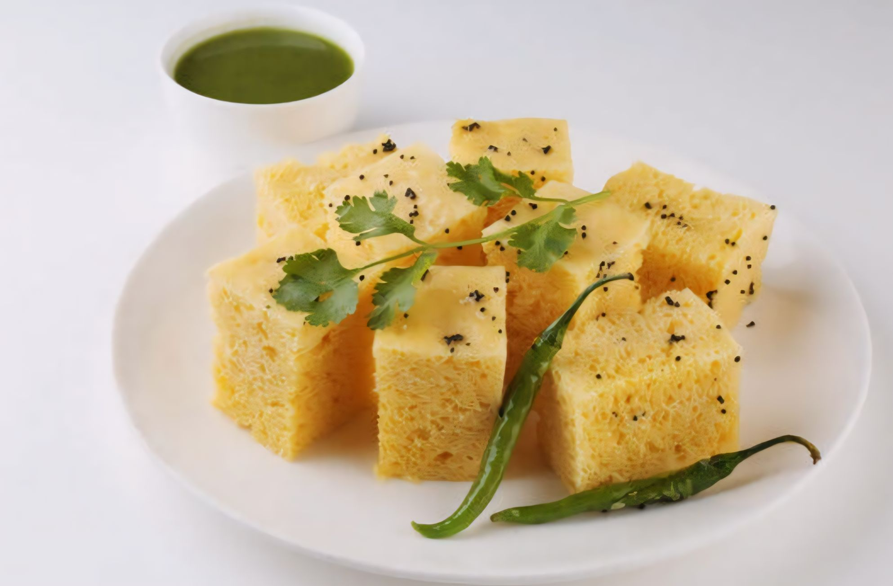

Ingredients:
- 1 cup gram flour (besan)
- 1/4 cup semolina (sooji)
- 1/2 cup yogurt (plain)
- 1/4 cup water
- 1 tablespoon lemon juice
- 2 green chilies, finely chopped
- 1 teaspoon ginger paste
- 1 teaspoon sugar
- 1 teaspoon eno fruit salt
- Salt to taste
- 2 tablespoons oil
- 1 teaspoon mustard seeds
- 1 teaspoon sesame seeds
- A pinch of asafoetida (hing)
- 2-3 tablespoons chopped coriander leaves
- Grated coconut (optional, for garnish)
- Chopped green chilies (optional, for garnish)
|
 |